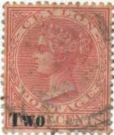
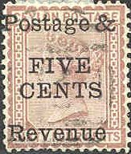
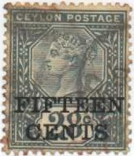
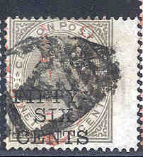

Return To Catalogue - Ceylon 1855-1867 - Ceylon 1868-1902 - Ceylon miscellaneous
Note: on my website many of the
pictures can not be seen! They are of course present in the
catalogue;
contact me if you want to purchase it.

'TWO' on 4 c red 'TWO' on 4 c lilac 'TWO CENTS' on 4 c red 'TWO CENTS' on 4 c lilac 'Two Cents' on 4 c red 'Two Cents' on 4 c lilac '2 Cents' on 4 c red '2 Cents' on 4 c lilac '2 Cents' and bar on 4 c red '2 Cents' and bar on 4 c lilac
What is this 'Two Cents' in two lines and bar overprint on 4 c?
Forgery?
Value of the stamps |
|||
vc = very common c = common * = not so common ** = uncommon |
*** = very uncommon R = rare RR = very rare RRR = extremely rare |
||
| Value | Unused | Used | Remarks |
| 'TWO' on 4 c red | *** | * | |
| 'TWO' on 4 c lilac | ** | * | |
| 'TWO CENTS' on 4 c red | * | * | |
| 'TWO CENTS' on 4 c lilac | * | * | |
| 'Two Cents' on 4 c red | *** | ** | |
| 'Two Cents' on 4 c lilac | RR | RR | |
| '2 Cents' on 4 c red | *** | *** | |
| '2 Cents' on 4 c lilac | RR | RR | |
| '2 Cents' and bar on 4 c red | *** | *** | |
| '2 Cents' and bar on 4 c lilac | RR | RR | |
'3 Cents' and bar on 4 c red (1892) '3 Cents' and bar on 4 c lilac (1892) '3 Cents' on 28 c grey (1892)
Value of the stamps |
|||
vc = very common c = common * = not so common ** = uncommon |
*** = very uncommon R = rare RR = very rare RRR = extremely rare |
||
| Value | Unused | Used | Remarks |
| 3 c on 4 c red | *** | *** | |
| 3 c on 4 c lilac | ** | ** | |
| 3 c on 28 c | *** | *** | |

'Postage & FIVE CENTS Revenue' on 4 c red (1885) 'Postage & FIVE CENTS Revenue' on 4 c lilac (1885) 'Postage & FIVE CENTS Revenue' on 8 c yellow (1885) 'REVENUE AND POSTAGE 5 CENTS' on 8 c lilac (1885) 'POSTAGE Five Cents REVENUE' on 15 c green (1890) 'Postage & FIVE CENTS Revenue' on 16 c lilac (1885) 'Postage & FIVE CENTS Revenue' on 24 c green (1885) 'Postage & FIVE CENTS Revenue' on 24 c brown (1885) 'Postage & FIVE CENTS Revenue' on 32 c grey (1885) 'Postage & FIVE CENTS Revenue' on 36 c blue (1885) 'Postage & FIVE CENTS Revenue' on 48 c red (1885) 'Postage & FIVE CENTS Revenue' on 64 c brown (1885) 'Postage & FIVE CENTS Revenue' on 96 c grey (1885)
Value of the stamps |
|||
vc = very common c = common * = not so common ** = uncommon |
*** = very uncommon R = rare RR = very rare RRR = extremely rare |
||
| Value | Unused | Used | Remarks |
| 5 c on 4 c red | *** | ** | Watermark 'CA Crown' |
| 5 c on 4 c lilac | RR | RR | Watermark 'CA Crown' |
| 5 c on 8 c yellow | R | *** | Watermark 'CA Crown' |
| 5 c on 8 c lilac | *** | * | Watermark 'CA Crown' |
| 5 c on 15 c | *** | *** | I've seen an inverted surcharge: RR |
| 5 c on 16 c | RR | R | Watermark 'CA Crown' |
| 5 c on 24 c green | RRR | RR | Watermark 'CC Crown' |
| 5 c on 24 c brown | RRR | RR | Watermark 'CA Crown' |
| 5 c on 32 c | RR | *** | |
| 5 c on 36 c | RR | *** | |
| 5 c on 48 c | RRR | RR | |
| 5 c on 64 c | RR | *** | |
| 5 c on 96 c | RR | RR | |
'Six Cents' on 15 c green (1899) 'TEN CENTS' on 16 c lilac (1885) 'TEN CENTS' on 24 c green (1885) 'TEN CENTS' on 24 c lilac (1885) '10 CENTS' on 24 c lilac (1885) 'TEN CENTS' on 36 c blue (1885) 'TEN CENTS' on 64 c brown (1885)
Value of the stamps |
|||
vc = very common c = common * = not so common ** = uncommon |
*** = very uncommon R = rare RR = very rare RRR = extremely rare |
||
| Value | Unused | Used | Remarks |
| 6 c on 15 c | * | * | |
| 10 c on 16 c | RRR | RRR | |
| 'TEN CENTS' on 24 c green | RRR | RR | Watermark 'CC Crown' |
| 'TEN CENTS' on 24 c lilac | RR | *** | Watermark 'CA Crown' |
| '10 CENTS' on 24 c brown | R | *** | Watermark 'CA Crown' |
| 10 c on 36 c | RRR | RRR | |
| 10 c on 64 c | RR | RR | |

'FIFTEEN CENTS' on 16 c lilac (1885) '15 CENTS' on 16 c orange (1885) 'FIFTEEN CENTS' on 25 c brown (1891) 'FIFTEEN CENTS' on 28 c grey (1891)
Value of the stamps |
|||
vc = very common c = common * = not so common ** = uncommon |
*** = very uncommon R = rare RR = very rare RRR = extremely rare |
||
| Value | Unused | Used | Remarks |
| 15 c on 16 c lilac | R | R | |
| 15 c on 16 c orange | R | *** | |
| 15 c on 25 c | R | R | |
| 15 c on 28 c | R | *** | |
'SIXTEEN 16 CENTS' on 24 c green (1882) 'TWENTY CENTS' on 24 c green (1885) 'Twenty Cents' on 32 c grey (1885) 'TWENTY 20 CENTS' on 64 c brown (1882)
Value of the stamps |
|||
vc = very common c = common * = not so common ** = uncommon |
*** = very uncommon R = rare RR = very rare RRR = extremely rare |
||
| Value | Unused | Used | Remarks |
| 16 c on 24 c | RR | RR | |
| 20 c on 24 c | RR | RR | |
| 20 c on 32 c | RR | RR | |
| 20 c on 64 c | R | *** | |
'Twenty five Cents' on 32 c grey (1885) '28 CENTS' on 32 c grey (1885) 'Twenty-Eight Cents' on 48 c red (1885)
Value of the stamps |
|||
vc = very common c = common * = not so common ** = uncommon |
*** = very uncommon R = rare RR = very rare RRR = extremely rare |
||
| Value | Unused | Used | Remarks |
| 25 c on 32 c | R | R | |
| 28 c on 32 c | R | *** | |
| 28 c on 48 c | RR | R | |

'THIRTY CENTS' on 36 c blue (1885, exists with inverted overprint) '30 CENTS' on 36 c olive (1885) 'FIFTY-SIX CENTS' on 96 c grey (1885) '56 CENTS' on 96 c olive (1885)
Value of the stamps |
|||
vc = very common c = common * = not so common ** = uncommon |
*** = very uncommon R = rare RR = very rare RRR = extremely rare |
||
| Value | Unused | Used | Remarks |
| 30 c on 36 c blue | R | R | Inverted surcharge: RR |
| 30 c on 36 c olive | RR | R | |
| 'FIFTY-SIX CENTS' on 96 c | RR | R | |
| '56 CENTS' on 96 c | RR | R | |
Large sizes
'One Rupee Twelve Cents' on 2 R 50 red (1885) '1 r 12 c' on 2 R 50 red (1885) '1 R 50 C' on 2 R 50 c grey (1899) '2 R 25 C' on 2 R 50 c yellow (1899)
Value of the stamps |
|||
vc = very common c = common * = not so common ** = uncommon |
*** = very uncommon R = rare RR = very rare RRR = extremely rare |
||
| Value | Unused | Used | Remarks |
| 'One Rupee Twelve Cents' on 2 R 50 c | RR | R | |
| 1 R 12 c on 2 R 50 c | RR | RR | |
| 1 R 50 c on 2 R 50 c | RR | RR | |
| 2 R 25 c on 2 R 50 c | RR | RR | |
Sperati forgeries of the "Postage & FIVE CENTS Revenue" on 24 c brown
(Sperati forgery, left image obtained from Richard Frajola's
website on Sperati forgeries: http://www.seymourfamily.com/rfrajola/Sperati/speratiindex.htm)
Sperati made forgeries of the "Postage &
FIVE CENTS Revenue" on 24 c brown. He used a 4 c rose with
the same overprint, from which he removed the basic stamp image
(leaving the overprint intact), and then printed the 24 c design
on top of it, in such a way that the overprint and cancel appear
to be on top. In this way, the paper, overprint and cancel are
genuine! The printing method used by Sperati seems to be
different from the genuine printing process.
Sperati also forged some 4 c lilac stamps (only known with
additional surcharge). I have not seen these forgeries.
Other forged overprints:
(Forged 'TEN CENTS' on a 36 c blue stamp)
Two 4 c stamps with forged inverted "Postage & Revenue
FIVE CENTS" overprint
Forged overprints made by the forger Fournier,
reduced sizes, images obtained from a 'Fournier Album of
Philatelic Forgeries'